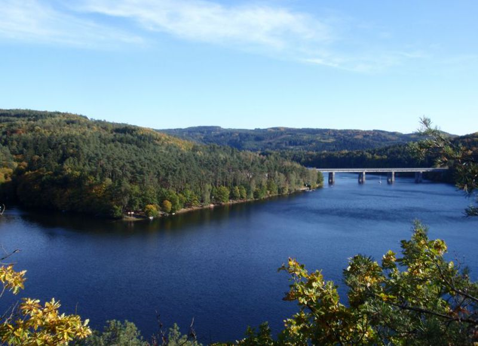

Úvod
Základní informace

Lesní tábořiště Nebřich leží na břehu Slapské přehrady, asi 45 km jižně od Prahy. Vyznačuje se klidným a stinným lesním prostředím s vzrostlými stromy i křovinatým podrostem. Pobyt v Lesním tábořišti tak má oproti jiným kempům o něco blíž k táboření ve volné přírodě.
Tábořiště je vybaveno novým sociálním zařízením, které tvoří kromě dostatečného počtu toalet také umývárny s teplou vodou a sprchami , a samozřejmě i venkovní žlaby na mytí nádobí a čerpání pitné vody. V kempu dále najdete kiosek s občerstvením, stoly pro stolní tenis, antukové hřiště, půjčovnu lodiček a pro děti šplhací věž se skluzavkou a pískoviště. V přilehlé zátoce sídlí také půjčovna obytných lodí Napalubu a v těsném sousedství tábořiště naleznete adrenalinový Lanový park Slapy, který patří k největším v Česku.
Širší okolí tábořiště nabízí mnoho dalších sportovních aktivit a turistických cílů, např. VZ Měřín (aquacentrum, bowling, sauna, squash, aj.), výlety parníkem, projížďky na koních, Zámek Konopiště a mnoho dalších.
Kemp je ideální pro rodinnou rekreaci, častými návštěvníky jsou také rybáři, cyklisté, potápěči a turisté. Nemáme zde animační programy ani diskotéky, kemp je vyhledáván pro své autentické a klidné přírodní prostředí.
Nabízíme ubytování v našich karavanech, anebo můžete přijet s vlastním stanem či karavanem. Před návštěvou prosím čtěte provozní řád a ceník. Lesní tábořiště není určeno k jednorázovým návštěvám za účelem grilování, barbecue nebo pikniku. Rozdělávání ohně nebo grilu je dovoleno pouze ubytovaným hostům. Vjezd motorových vozidel je dovolen pouze v rámci pobytu, nebo konkrétním návštěvám ubytovaných hostů.
Tábořiště je v provozu každoročně od začátku května do konce září.
Těšíme se na vaši návštěvu.
Naše ocenění
Ohodnoťte nás v soutěži